import polars as pl
import plotnine_polars as p9
import socviz_pl as sv
import mizani.formatters as mf
from plotnine_polars import aes
from plotnine.composition import plot_annotation8 Refine Your Plots
This chapter follows Chapter 8 of Healy (2026), translating the main examples to Python, Polars, and plotnine_polars.
The default settings that ggplot (and plotnine) ship with are generally good enough for exploratory work. When you want to produce a figure for presentation or publication, though, you will need to make some adjustments. Refining a plot can mean several things: adjusting the look to match your personal taste, meeting the expectations of a journal or audience, or completely transforming the appearance. The grammar of graphics gives us a systematic way to think about these changes in terms of scales, themes, and geoms.
The asasec dataset records membership and revenue information for American Sociological Association (ASA) special-interest sections.
asasec = sv.load_data("asasec")
(
asasec
.select("Sname", "Revenues", "Members", "Journal")
.sample(5, seed=7)
)
shape: (5, 4)
| Sname | Revenues | Members | Journal |
|---|---|---|---|
| str | i32 | i32 | str |
| "Altruism" | 1862 | 318 | "No" |
| "CITAMS" | 4800 | 371 | "No" |
| "Racial & Eth Min" | 4170 | 924 | "Yes" |
| "Human Rights" | 1754 | 297 | "No" |
| "Teaching" | 19376 | 737 | "No" |
We start with a basic scatterplot of section membership against revenues, with a smoothed trend line added.
(
asasec
.ggplot(aes(x="Members", y="Revenues"))
.geom_point()
.geom_smooth(color = "steelblue")
)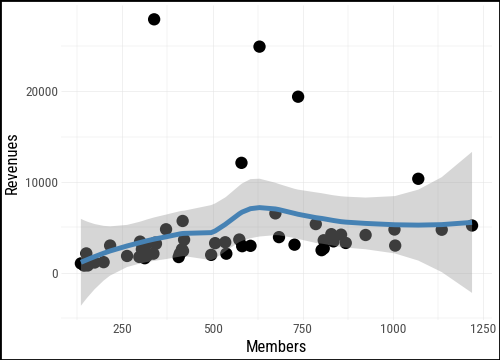
We can map the Journal variable to the color aesthetic to distinguish sections that publish their own journal from those that do not. Notice that the smooth is now fit separately for each group.
(
asasec
.ggplot(aes(x="Members", y="Revenues"))
.geom_smooth(method="lm", se=False)
.geom_point(aes(color="Journal"))
)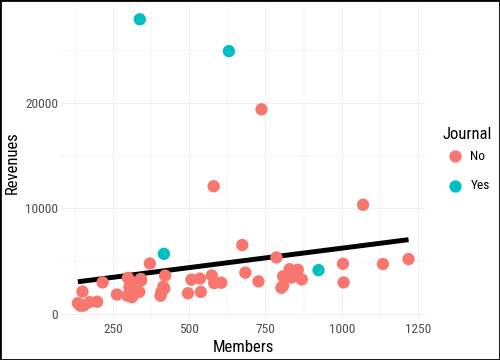
The polished version below adds several refinements at once. A single linear trend is drawn in a light gray so it does not compete with the points. The axes are formatted with commas and dollar signs using formatters from mizani. Sections with revenues above $7,000 are labeled by name. Finally, the legend is moved to the bottom to leave more room for the plot area.
(
asasec
.ggplot(aes(x="Members", y="Revenues"))
.geom_smooth(method="lm", se=False, color="#CCCCCC")
.geom_point(aes(color="Journal"))
.geom_text(
data=asasec.filter(pl.col("Revenues") > 7000),
mapping=aes(label="Sname"),
size=8,
nudge_y=1500,
)
.scale_x_continuous(labels=mf.comma_format())
.scale_y_continuous(
labels=mf.currency_format(big_mark=",",
precision=0)
)
.labs(
x="Membership",
y="Revenues",
color="Section has own journal",
title="ASA Sections",
subtitle="2014 calendar year.",
caption="Source: ASA annual report.",
)
.add_theme(legend_position="bottom")
)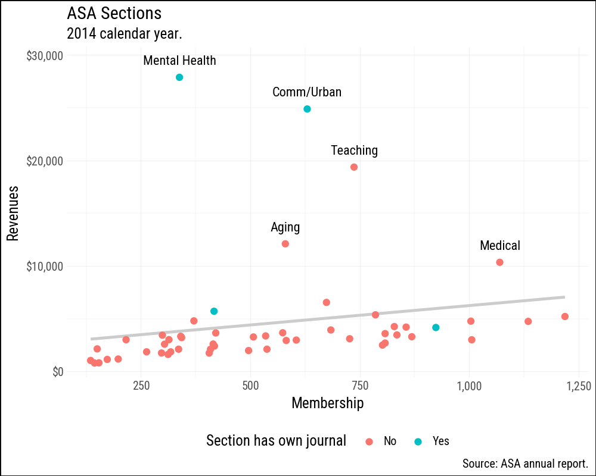
8.1 Use Colour to Your Advantage
Colour is one of the most powerful aesthetic channels in data visualization, and also one of the most misused.
In plotnine, as in ggplot2, the scale you get depends on the type of your variable. A numeric column (integer or float) is treated as continuous and mapped to a gradient, with the legend displayed as a color bar. A Polars Categorical or Enum column — the equivalent of R’s factor — is treated as discrete, and the legend shows one labeled swatch per level. A plain string column is also treated as discrete and sorted alphabetically, just as ggplot2 sorts character vectors; cast to pl.Enum if you need a specific ordering.
Like ggplot, plotnine (matplotlib) distinguishes between qualitative, sequential, and diverging colour schemes.
- Qualitative (categorical) palettes use distinct, unordered hues for unordered categories such as countries or regime types. No colour should imply “more” or “less” than another.
- Sequential palettes represent magnitude by moving from light to dark (or low to high saturation) along a single hue or across a narrow range of hues.
- Diverging palettes work for variables with a meaningful midpoint: they spread symmetrically from a neutral center toward two contrasting hues.
Matplotlib ships a large collection of named colourmaps covering all three types. The Matplotlib colormap reference is the best starting point for exploring what is available. Plotnine gives access to these colormaps through scale_color_cmap() and scale_fill_cmap() for continuous variables, and through scale_color_cmap_d() and scale_fill_cmap_d() for discrete ones. The classic ColorBrewer palettes are available via scale_color_brewer() and scale_fill_brewer().
Figures 8.4, 8.5, and 8.6 show the available ColorBrewer palettes of each type.
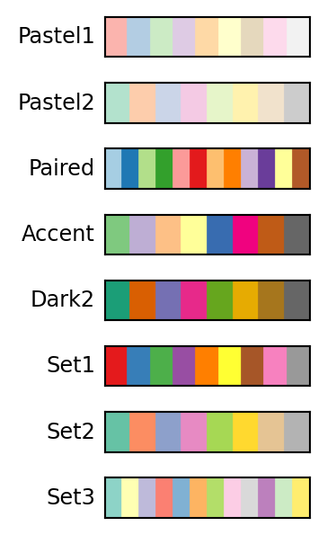
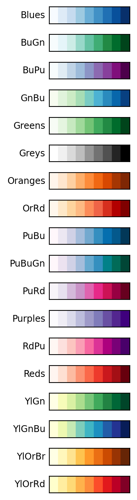
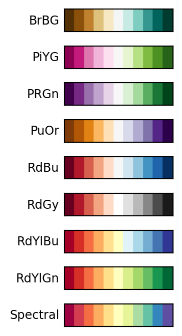
8.1.1 Qualitative Palettes
organdata = sv.load_data("organdata")The default discrete colour scale in plotnine (scale_color_hue()) spaces hues evenly around a circle in HCL space — the same approach ggplot2 uses. For three categories it usually looks fine; with more categories the hues can become hard to distinguish.
p = (
organdata #.drop_nulls(subset=["donors", "roads", "world"])
.ggplot(aes(x="roads", y="donors", color="world"))
.geom_point(size=2)
.add_theme(legend_position="bottom")
)ColorBrewer qualitative palettes give more deliberate control. Set2 uses muted tones that work well at small point sizes; Dark2 provides higher contrast.
(
(p + p9.scale_color_brewer(type="qual", palette="Set2")) /
(p + p9.scale_color_brewer(type="qual", palette="Accent")) /
(p + p9.scale_color_brewer(type="qual", palette="Dark2"))
)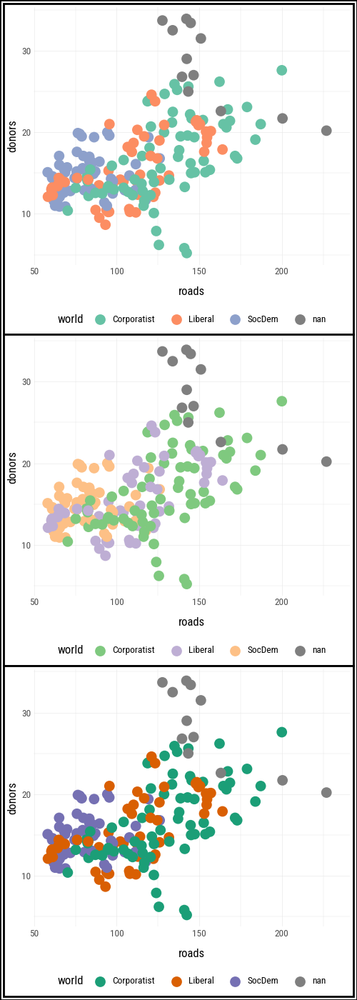
8.2 Layer, Highlight, Repeat
Plotnine’s layered grammar works strongly to our advantage here. A straightforward but effective technique is to draw a base layer of all observations in a muted color, then add a second layer that highlights only the cases of interest, and finally add a text layer to label the most notable ones.
The same approach works whether you are producing a figure that stands alone or building a slide deck where you reveal layers one at a time to walk an audience through an argument.
We illustrate the technique with county-level results from the 2024 US general election. We join county_data (which has demographic variables including total population and Black population) with election24_county_df on the county FIPS code. The flipped column records whether the winning party changed between 2020 and 2024.
county_data = sv.load_data("county_data")
election24 = sv.load_data("election24_county_df")
flipped = (
county_data
.with_columns(prop_black=pl.col("black") / pl.col("pop"))
.join(
election24.select("fips", "winner", "flipped"),
left_on="id", right_on="fips",
how="left",
)
)We start with a base layer: total county population on the x-axis (on a log scale, because county populations span several orders of magnitude) and the share of the population that is Black on the y-axis. All 3,000-plus counties are drawn in a mid-gray with low alpha so they form a neutral reference backdrop.
p0 = (
flipped
.ggplot(aes(x="pop", y="prop_black"))
.geom_point(alpha=0.15, color="#808080")
.scale_x_log10(labels=mf.comma_format())
.scale_y_continuous(labels=mf.percent_format())
.labs(x="Total population (log scale)", y="Black population share")
.add_theme(legend_position="top")
)p0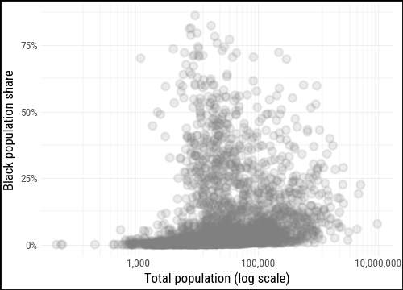
For the second layer we pass a filtered subset — only the counties where flipped == "Yes" — directly to geom_point(), mapping winner to color. This lets the full distribution stay visible in the background while the flipped counties stand out in front.
flipped_yes = flipped.filter(pl.col("flipped") == "Yes")
p0.geom_point(data=flipped_yes, mapping=aes(color="winner"))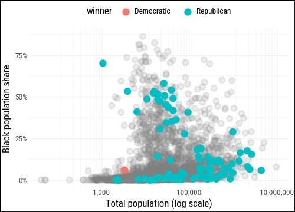
We define party_colors to give Republicans and Democrats their conventional hues and add a text layer for the most notable flipped counties: those with a high Black population share, those that flipped to the Democrats (rare in 2024), and large counties with more than a million residents.
party_colors = {"Democratic": "#2166AC", "Republican": "#D73027"}
(
p0
.geom_point(data=flipped_yes, mapping=aes(color="winner"))
.scale_color_manual(values=party_colors)
)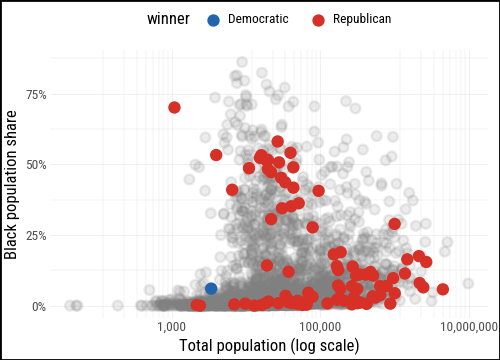
labeled = (
flipped
.filter(
pl.col("flipped") == "Yes",
(pl.col("prop_black") > 0.18)
| (pl.col("winner") == "Democratic")
| (pl.col("pop") > 1_000_000)
)
)(
p0
.geom_text(
data=labeled,
mapping=aes(label="st", color="winner"),
size=7,
nudge_y=0.02,
)
.geom_point(data=flipped_yes, mapping=aes(color="winner"))
.scale_color_manual(values=party_colors)
.labs(
color="County flipped to ...",
title="Flipped counties, 2024",
caption="Counties in gray did not flip.",
)
)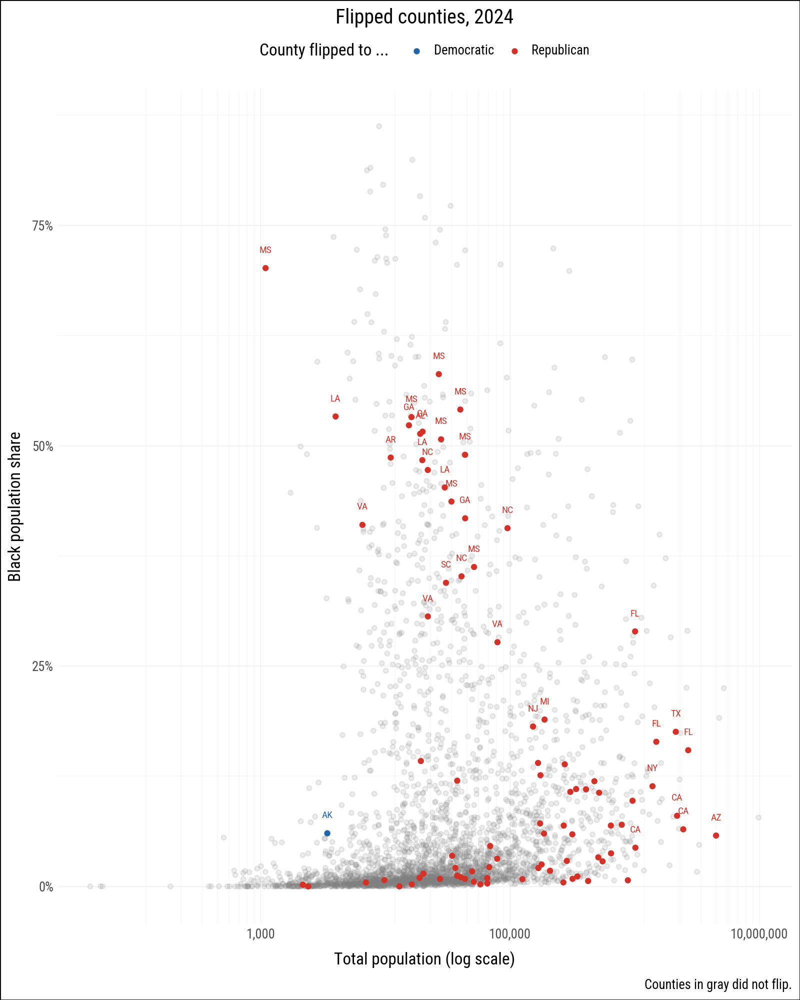
8.3 Change the Appearance of Plots with Themes
Throughout the book we have seen how the grammar of graphics separates what data maps to what aesthetic from how the non-data elements look. The first kind of question is answered by geoms, scales, and aesthetic mappings. The second is the job of themes.
The distinction matters in practice. Writing geom_point(mapping=aes(size="population")) maps point size to a data variable. Writing geom_point(size=3) sets a fixed size that represents nothing in the data. Thematic elements — background color, gridline weight, axis tick length, legend position, typeface — are always in the second category and are controlled through theme().
8.3.1 Built-in Themes
Plotnine ships more built-in themes than ggplot2 does. The default is theme_gray(), but theme_bw(), theme_minimal(), theme_classic(), theme_light(), theme_dark(), theme_linedraw(), theme_void(), theme_538(), theme_seaborn(), theme_matplotlib(), and theme_tufte() are all available without installing any extra packages.
We build a base plot and apply several themes to it.
p_base = p0.geom_point(data = flipped_yes)(
(
p_base
.labs(title = "theme_gray()")
.theme_gray(base_size=6)
) /
(
p_base
.labs(title = "theme_bw()")
.theme_bw(base_size=6)
) /
(
p_base
.labs(title = "theme_minimal()")
.theme_minimal(base_size=6)
) /
(
p_base
.labs(title = "theme_linedraw()")
.theme_linedraw(base_size=6)
) /
(
p_base
.labs(title = "theme_tufte()")
.theme_tufte(base_size=6)
)
) & p9.theme(figure_size=(2.5, 12))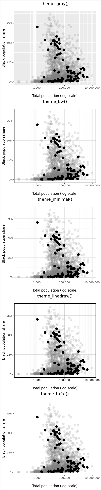
theme_tufte() follows Edward Tufte’s principle of maximizing the data-ink ratio by removing all non-data ink that does not carry information.
To apply a theme to every subsequent plot in a session, use p9.theme_set(). This is useful at the top of a document to establish a house style without repeating the theme call on every plot.
p9.theme_set(p9.theme_minimal())(
p0
.geom_point(color="#d9e5ed")
.geom_smooth(method="loess", color="#F0E442", se=False)
.theme_bw()
.add_theme(
plot_background=p9.element_rect(fill="#073b4c"),
panel_background=p9.element_rect(fill="#073b4c"),
text=p9.element_text(color="#d9e5ed"),
axis_text=p9.element_text(color="#d9e5ed"),
axis_ticks=p9.element_line(color="#d9e5ed"),
panel_grid=p9.element_line(color="#d9e5ed", alpha=0.3),
panel_border=p9.element_rect(color="#d9e5ed"),
)
)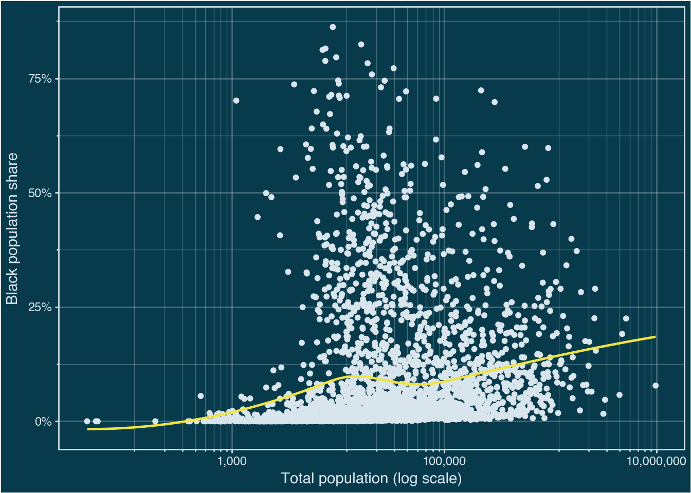
8.3.2 Customizing Theme Elements
theme() takes named arguments that correspond to plot components. Names follow a hierarchical pattern: axis_text affects all axis tick labels, while axis_text_x affects only the x-axis labels. The value passed to each argument is one of four element functions:
element_text()for textelement_line()for lines and borderselement_rect()for filled rectangles (backgrounds, legend boxes)element_blank()to remove an element entirely
The following example builds a faceted density plot of GSS respondent ages across survey years. We start from the data, define a mean-age annotation table, and then progressively apply theme adjustments to strip away non-essential ink and improve readability.
from plotnine import element_text, element_line, element_rect, element_blank
yrs = (
list(range(1976, 1989, 2)) + [1993] +
list(range(1996, 2019, 2)) + [2021, 2024]
)
show_years = list(range(1976, 2017, 10)) + [2024]
gss_lon = sv.load_data("gss_lon")
mean_ages = (
gss_lon
.drop_nulls(subset=["age"])
.filter(pl.col("year").is_in(yrs))
.group_by("year")
.agg(xbar=pl.col("age").mean().round(0).cast(pl.Int32))
.with_columns(y=pl.lit(0.3))
)
yr_labs = pl.DataFrame({"x": 85, "y": 0.6, "year": yrs})p_age = (
gss_lon
.filter(pl.col("year").is_in(yrs))
.drop_nulls(subset=["age"])
.ggplot(aes(x="age"))
.geom_density(fill="#333333", color="none",
mapping=aes(y=p9.after_stat("scaled")))
.geom_vline(
data=mean_ages,
mapping=aes(xintercept="xbar"),
color="white",
size=1,
)
.geom_text(
data=mean_ages.filter(pl.col("year").is_in(yrs)),
mapping=aes(x="xbar", y="y", label="xbar"),
nudge_x=1.5,
color="white",
size=7,
ha="left",
)
.geom_text(
data=yr_labs.filter(pl.col("year").is_in(show_years)),
mapping=aes(x="x", y="y", label="year"),
size=7,
)
.scale_x_continuous(breaks=[20, 30, 40, 60, 70, 80])
.facet_wrap("year", ncol=1)
.labs(x="Age", y=None,
title="Age Distribution of GSS Respondents",
)
)The default output is functional but noisy for a small-multiple chart like this. We apply add_theme() to remove unnecessary elements: the y-axis, facet strip labels, minor gridlines, and the panel backgrounds.
(
p_age
.add_theme(
axis_line_x=p9.element_blank(),
axis_text_y=p9.element_blank(),
axis_title_y=p9.element_blank(),
axis_ticks_y=p9.element_blank(),
strip_background=p9.element_blank(),
strip_text_x=p9.element_blank(),
strip_text_y=p9.element_blank(),
panel_grid_minor=p9.element_blank(),
panel_grid_major_y=p9.element_blank(),
panel_background=p9.element_rect(fill="none"),
panel_spacing_y=0,
plot_title=p9.element_text(size=8),
axis_text_x=p9.element_text(size=6),
figure_size=(2, 10)
)
.geom_vline(
xintercept=[20, 30, 40, 60, 70, 80],
color="white",
linetype="dotted",
size=0.4,
)
)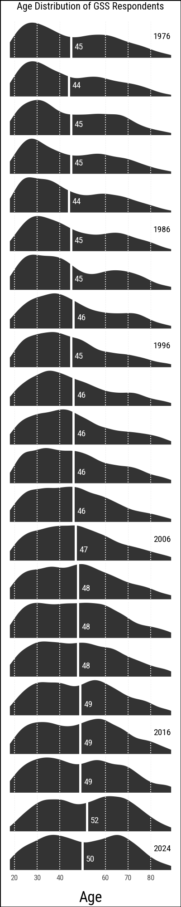
8.3.3 Building a Custom Theme
Rather than adding the same theme() call to every plot, you can wrap your adjustments in a function. Plotnine themes compose with +, so the typical pattern is to start from a built-in theme and override specific elements.
def theme_clean(base_size=11):
return (
p9.theme_minimal(base_size=base_size)
+ p9.theme(
axis_line=element_line(color="#333333", size=0.3),
panel_grid_minor=element_blank(),
panel_grid_major=element_line(color="#EEEEEE"),
strip_background=element_rect(fill="#F5F5F5", color="#CCCCCC"),
)
)
p_base + theme_clean()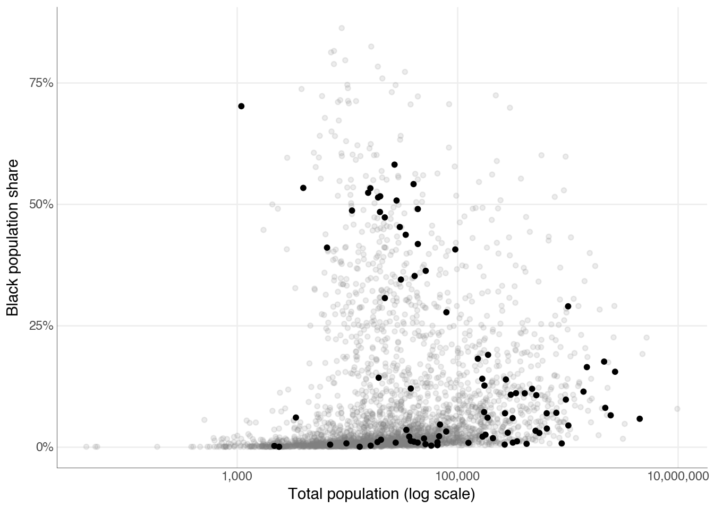
p_base + theme_clean(base_size=14)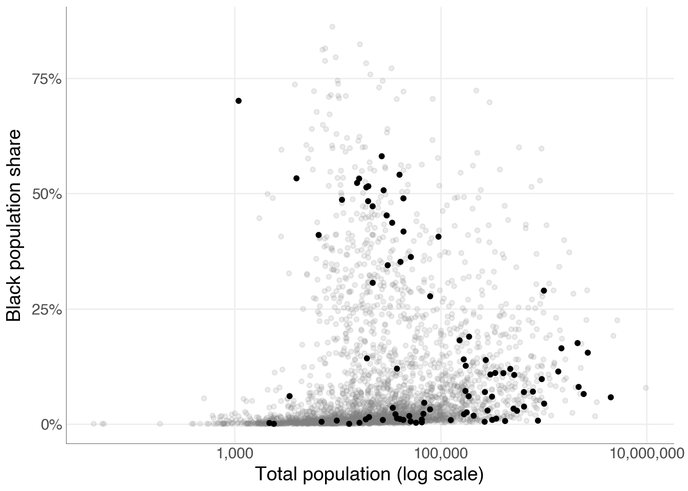
8.4 Workhorses, Show Ponies, Unicorns
Not every plot needs the same level of polish. A workhorse plot is one you produce quickly during exploration; a show pony is a carefully refined figure destined for a paper or presentation; a unicorn is a one-off, highly customised visualisation that required significant effort to produce. Most of the time you want workhorses. Occasionally one becomes a show pony. The techniques in this section help with that transition.
8.4.1 Look Both Ways
The farsinvolved dataset records daily counts of child pedestrians (aged 0–17) involved in fatal motor vehicle crashes in the United States from 2009 to 2023. We are interested in the pattern across the calendar year, so we aggregate by month and day and take the mean count across years. Because we are averaging over many years, February 29th is included; we use year 2000 as a placeholder because 2000 was a leap year.
from datetime import date
farsinvolved = sv.load_data("farsinvolved")
month_order = [
"January", "February", "March", "April", "May", "June",
"July", "August", "September", "October", "November", "December",
]
month_num = {m: i + 1 for i, m in enumerate(month_order)}
fars_agg = (
farsinvolved
.with_columns(pl.col("day").cast(pl.Int32))
.group_by("month", "day")
.agg(n=pl.col("n").mean())
.with_columns(
month_num=pl.col("month").replace(month_num).cast(pl.Int32),
)
.with_columns(
fake_yr=pl.date(2000, pl.col("month_num"), pl.col("day")),
flag=(pl.col("month") == "October") & (pl.col("day") == 31),
)
.sort("fake_yr")
)Halloween (October 31) stands out as the single most dangerous day for child pedestrians. We flag it so we can color it differently in the plot.
p9.theme_set(sv.theme_socviz())<plotnine.themes.theme_minimal.theme_minimal at 0x119a5ce10>black_orange = {True: "#E06000", False: "#222222"}
(
fars_agg
.ggplot(aes(x="fake_yr", y="n", fill="flag"))
.geom_col(width=1.05)
.scale_fill_manual(values=black_orange)
.add_guides(fill="none")
.scale_x_date(
date_breaks="1 month",
date_labels="%b",
expand = (0.005, 2))
.annotate(
"text",
x=date(2000, 10, 30),
y=3.6,
label="Halloween",
ha="right",
size=9,
color=black_orange[True],
)
.labs(
x="Day of the month",
y="Mean N involved",
title="Pedestrians aged 0–17 in Fatal Motor Vehicle Crashes",
subtitle="Daily average, 2009–2023",
caption="Data: NHTSA Fatality Analysis Reporting System",
)
.add_theme(figure_size=(10, 3))
)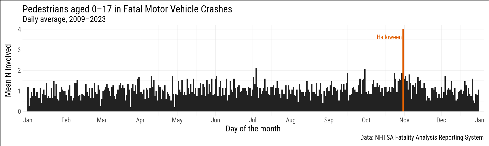
The R version of this section also shows a polar (radial) coordinate version of the same chart using coord_radial() and the geomtextpath package. For comparison, the matplotlib chart below routes through the native polar projection.
import matplotlib.pyplot as plt
import numpy as np
n_days = 366 # 2000 is a leap year
plot_data = (
fars_agg
.with_columns(doy=pl.col("fake_yr").dt.ordinal_day())
.with_columns(angles = 2 * np.pi * (pl.col('doy') - 1) / n_days)
)
fig, ax = plt.subplots(figsize=(7, 7), subplot_kw=dict(projection='polar'))
ax.set_theta_zero_location('N')
ax.set_theta_direction(-1)
ax.scatter(plot_data.filter(~pl.col('flag')).select('angles').to_series(),
plot_data.filter(~pl.col('flag')).select('n').to_series(),
s=15, facecolors='none', edgecolors='#222222', linewidths=0.5)
ax.scatter(plot_data.filter(pl.col('flag')).select('angles').to_series(),
plot_data.filter(pl.col('flag')).select('n').to_series(),
s=40, color='#E06000', zorder=5)
month_angles = [
2 * np.pi * (date(2000, m, 1).timetuple().tm_yday - 1) / n_days
for m in range(1, 13)
]
month_labels = [
'January', 'February', 'March', 'April', 'May', 'June',
'July', 'August', 'September', 'October', 'November', 'December',
]
ax.set_xticks(month_angles)
ax.set_xticklabels(month_labels, size=8)
ax.set_ylim(-0.3, plot_data['n'].max() + 0.3)
ax.yaxis.set_tick_params(labelsize=7)
ax.grid(True, alpha=0.3, color='gray')
ax.tick_params(axis='x', pad=8)
hw_angle = 2 * np.pi * (date(2000, 10, 31).timetuple().tm_yday - 1) / n_days
hw_n = plot_data.filter(pl.col("flag")).select('n').to_series().item()
ax.annotate(
'Halloween',
xy=(hw_angle, hw_n),
xytext=(hw_angle - 0.06, hw_n - 0.25),
color='#E06000',
fontsize=8,
ha='center',
)
ax.set_title(
"Pedestrians aged 0–17 in Fatal Motor Vehicle Crashes\nDaily average, 2009–2023",
pad=15,
size=9,
)
plt.tight_layout()
plt.show()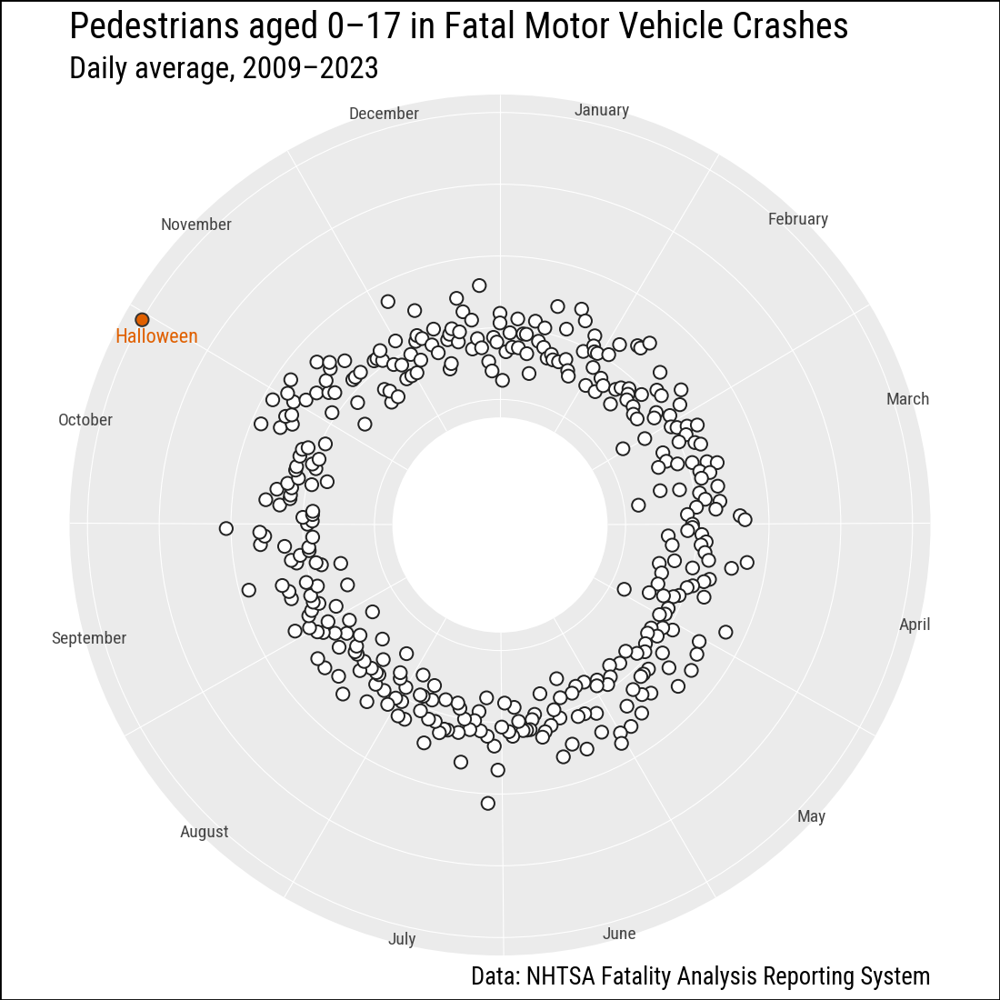
The column chart above conveys the same information more directly: lengths are easier to judge than angles.
8.4.2 Saying No to Pie
Pie charts ask readers to judge angles and arc lengths, which people do poorly compared to judging position along a common scale or the length of a bar. The studebt dataset describes the distribution of outstanding U.S. student loan debt, broken into debt-amount bands, with separate rows for the share of borrowers and the share of total balances in each band.
studebt = sv.load_data("studebt")
studebt.head(8)
shape: (8, 4)
| Debt | type | pct | Debtrc |
|---|---|---|---|
| str | str | i32 | str |
| "Under $5" | "Borrowers" | 20 | "Under $5k" |
| "$5-$10" | "Borrowers" | 17 | "$5k-$10k" |
| "$10-$25" | "Borrowers" | 28 | "$10k-$25k" |
| "$25-$50" | "Borrowers" | 19 | "$25k-$50k" |
| "$50-$75" | "Borrowers" | 8 | "$50k-$75k" |
| "$75-$100" | "Borrowers" | 3 | "$75k-$100k" |
| "$100-$200" | "Borrowers" | 4 | "$100k-$200k" |
| "Over $200" | "Borrowers" | 1 | "Over $200k" |
A faceted bar chart is a straightforward alternative to a pie chart. Each panel shows one distribution, and within each panel the bar lengths are directly comparable.
Because our labels contain $, we need to tell matplotlib not to parse these as mathematical symbols.
import matplotlib as mpl
mpl.rcParams['text.parse_math'] = Falsedebt_order = [
"Under $5k", "$5k-$10k", "$10k-$25k", "$25k-$50k",
"$50k-$75k", "$75k-$100k", "$100k-$200k", "Over $200k",
]
f_labs = {
"Borrowers": "Percent of all Borrowers",
"Balances": "Percent of all Balances",
}
p_caption = "Source: FRB NY"
p_title = "Outstanding Student Loans"
p_subtitle = "44 million borrowers owe a total of $1.3 trillion"(
studebt
.with_columns(
pct_prop=pl.col("pct") / 100,
Debtrc=pl.col("Debtrc").cast(pl.Enum(debt_order)),
)
.ggplot(aes(x="Debtrc", y="pct_prop", fill="type"))
.geom_col()
.scale_y_continuous(labels=mf.percent_format())
.scale_fill_manual(values={"Balances": "#E69F00", "Borrowers": "#56B4E9"})
.add_guides(fill="none")
.facet_grid(". ~ type", labeller=f_labs)
.coord_flip()
.labs(
x="", y="",
caption=p_caption, title=p_title, subtitle=p_subtitle,
)
.add_theme(strip_text_x=element_text(face="bold"))
)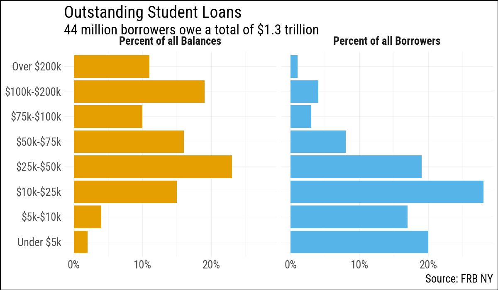
A stacked horizontal bar is another option. It sacrifices within-bar comparisons (each segment is harder to read than in the faceted version) but makes it easier to see that the two distributions sum to 100% and to compare their shapes at a glance. The R version uses guide_legend(label.position = "bottom") to place the debt-band labels beneath each colour swatch, which makes the single-row legend much easier to read. Plotnine’s guide_legend does not support label_position or title_position, so the labels appear to the right of the swatches and the legend title sits to the left of the entries rather than above them. The R version also benefits from ggplot2 wrapping long axis tick labels automatically; plotnine has no equivalent, and matplotlib’s wrap=True text property is not exposed through plotnine’s scale API in a useful way, so line breaks must be inserted manually with \n.
(
studebt
.with_columns(
pct_prop=pl.col("pct") / 100,
Debtrc=pl.col("Debtrc").cast(pl.Enum(debt_order)),
)
.ggplot(aes(x="type", y="pct_prop", fill="Debtrc"))
.geom_col(color="white", position="stack")
.scale_x_discrete(labels={
"Borrowers": "Percent of\nall Borrowers",
"Balances": "Percent of\nall Balances",
})
.scale_y_continuous(labels=mf.percent_format())
.scale_fill_cmap_d("viridis_r")
.coord_flip()
.add_guides(fill=p9.guide_legend(
reverse=True, nrow=1,
))
.labs(
x="", y="",
fill="Dollar Amount Owed",
caption=p_caption, title=p_title, subtitle=p_subtitle,
)
.add_theme(legend_position="top", figure_size=(10, 2.5))
)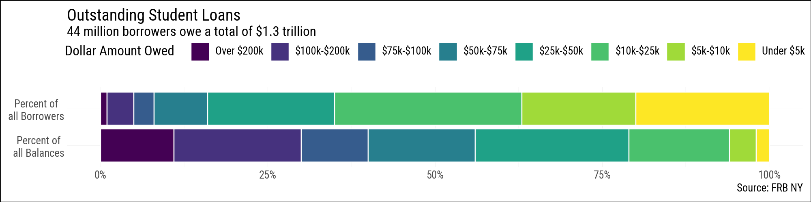
8.4.3 Build More Complex Layouts
The patchwork R package lets you arrange separate ggplot objects into a single figure with a shared layout. Plotnine offers the same capability through a composition API: / stacks plots vertically, | places them side by side, and & applies a scale or theme element to every plot in the composition at once.
The okboomer dataset contains a time-series decomposition of monthly U.S. birth rates from 1933 to 2015. We filter to the pre-1976 baby-boom period and build one plot per component, then stack them with /. The remainder component uses geom_col() rather than geom_line(), which a facet_grid() approach cannot accommodate.
okboomer = (
sv.load_data("okboomer")
.filter(pl.col("date") < pl.date(1976, 1, 1))
)
p_trend = (
okboomer
.ggplot(aes(x="date", y="trend"))
.geom_line(size=0.5)
.labs(x="", y="Average daily births\nper million",
title="Trend Component")
.add_theme(
axis_text_x=p9.element_blank(),
axis_text_y=p9.element_text(size=7),
axis_title_y=p9.element_text(size=7),
plot_title=p9.element_text(size=9, ha="left", face="bold"),
)
)
p_seasonal = (
okboomer
.ggplot(aes(x="date", y="seasonal"))
.geom_line(size=0.5)
.labs(x="", y="", title="Seasonal Component")
.add_theme(
axis_text_x=p9.element_blank(),
axis_text_y=p9.element_text(size=7),
plot_title=p9.element_text(size=9, ha="left", face="bold"),
)
)
p_remainder = (
okboomer
.ggplot(aes(x="date", y="remainder"))
.geom_col()
.labs(x="Year", y="", title="Remainder Component")
.add_theme(
axis_text_x=p9.element_text(size=7),
axis_text_y=p9.element_text(size=7),
axis_title_x=p9.element_text(size=7),
plot_title=p9.element_text(size=9, ha="left", face="bold"),
)
)
comp = (
p_trend / (p_seasonal / p_remainder)
& p9.scale_x_date(date_breaks="10 years", date_labels="%Y")
& p9.theme(figure_size=(10, 5))
)
comp + plot_annotation(title="U.S. Birth Rates, 1933–1975")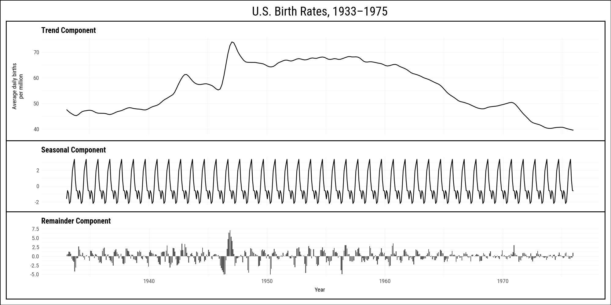